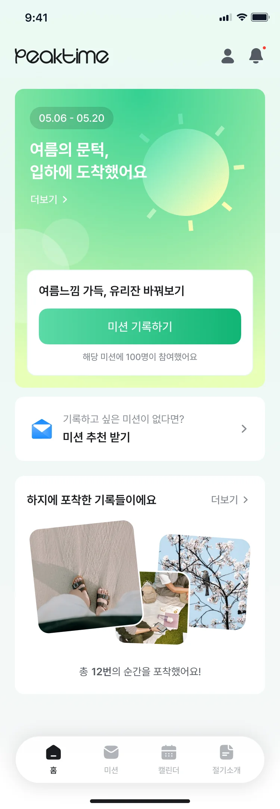
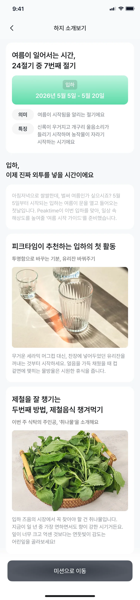
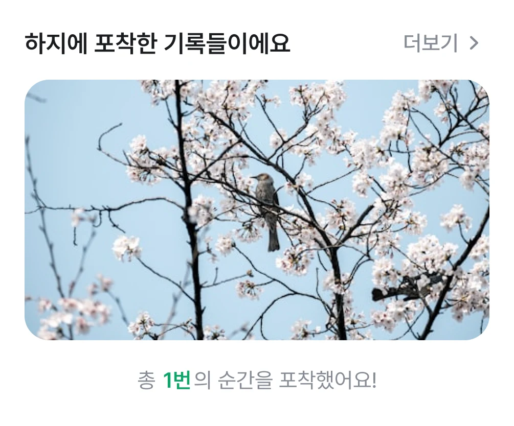
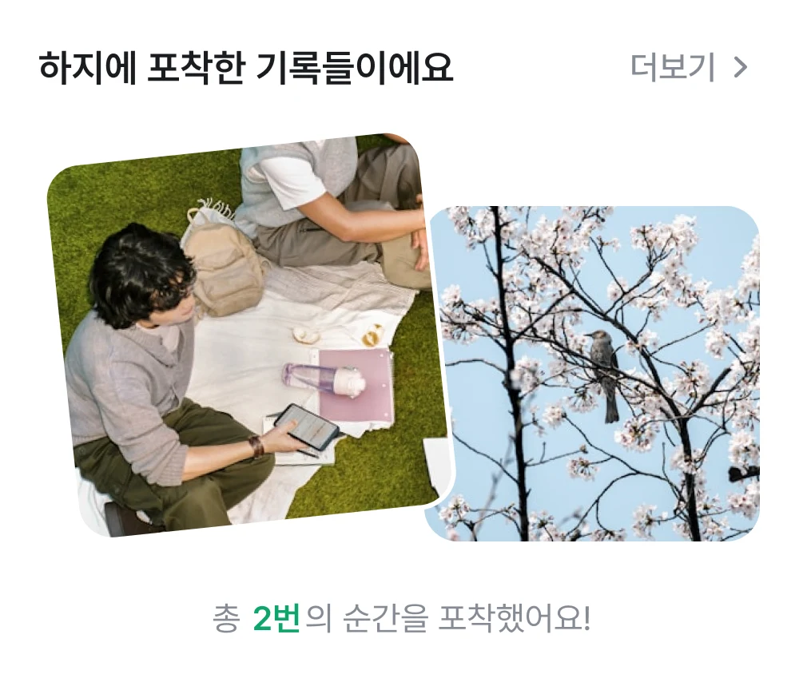
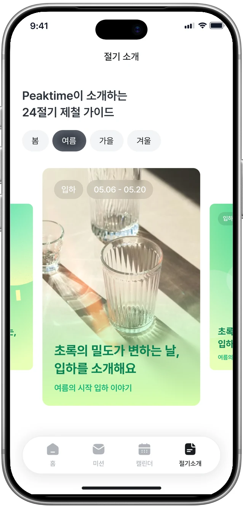
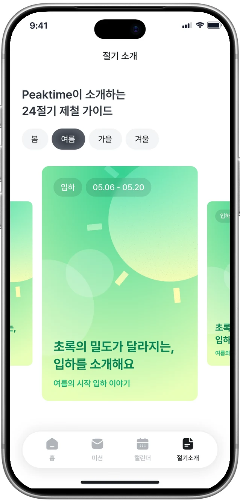

개요
- 24절기에 맞춰 제철 미션을 받고, 제철 일상을 사진으로 기록하는 iOS 앱
- IT 연합 동아리 디프만(DEPROMEET) 18기 프로젝트
- 담당: 홈, 캘린더, 절기 소개 화면, 절기 콘텐츠 이미지 서버 전환
- 팀 협업 환경 세팅: 커밋 컨벤션 자동화(Husky, Gitmoji), PR와 이슈 템플릿, CODEOWNERS
화면
홈과 절기 상세 (스크롤 전체)


홈 제철 기록 사진 (사진 수별 배치)


절기 소개


기술 스택
SwiftSwiftUITCATuistFirebase StorageKingfisherSwift Concurrency
역할
홈
- 오늘의 절기 카드, 미션 추천 배너, 제철 기록 사진 섹션 구현
- 미션 추천 카드를 누르면 미션 탭으로 이동해 바텀시트까지 열리도록 연동, 추천 미션을 이미 끝냈으면 알림 표시
- 기록 사진을 누르면 그 사진을 찍은 날짜의 캘린더로 이동
- 데이터를 못 받았을 때 에러 상태와 재시도, 미션이 없을 때 빈 상태 화면 처리
제철 기록 사진 배치
- 사진 수에 따라 배치가 달라짐. 없으면 빈 상태 이미지, 1장이면 크게 한 장, 2장이면 두 장을 겹쳐서, 3장 이상이면 세 장을 조금씩 기울여 겹쳐서 보여줌
- 피그마에는 사진 위치가 px로만 나와 있어서, 사진마다 가운데 좌표를 직접 계산한 뒤 화면 너비에 대한 비율로 바꿈
- 예를 들어 2장일 때 오른쪽 사진(144px)은 303×176 틀의 오른쪽 아래에 붙어 있음. 가운데 좌표는 x = 303 − 72 = 231, y = 176 − 72 = 104이고, 코드에는
w * 231 / 303,h * 104 / 176으로 넣음 - 처음엔 피그마 숫자를 그대로 넣었더니 화면이 넓거나 좁은 기기에서 사진이 어긋남. 비율로 바꾸고 틀의 가로세로 비율도 고정해서 해결
인터랙션
- 홈 헤더: 콘텐츠가 헤더 뒤로 지나가야 블러가 보여서 safeAreaInset 대신 overlay로 헤더를 띄움, 스크롤했을 때만 블러를 0.2초 페이드로 표시
- 절기 소개: 홈에서 들어오면 해당 계절 칩이 선택되고 그 절기 카드가 가운데 오도록 스크롤
- 계절을 바꾸면 현재 계절은 현재 절기, 다른 계절은 첫 절기로 이동
- 절기 상세: 콘텐츠 이미지가 여러 장이면 3초마다 자동으로 넘기고(0.5초 easeInOut) 스와이프도 가능, 아래에 인디케이터 표시
- 현재 절기 카드: 실사 이미지 아래쪽을 그라데이션 mask로 페이드아웃
컴포넌트
- 홈 절기 카드: 배치는 고정하고 절기만 넘기면 배경 이미지와 색이 그 절기에 맞게 바뀌도록 만듦
- 절기 소개 카드: 24절기 카드를 뷰 하나로 그리고, 현재 절기만 실사 사진을 얹은 카드로 따로 분리
캘린더
- SwiftUI Path로 캘린더 모양을 직접 그리고, 날짜별 기록 상세 화면 구현
- Entity, Repository 인터페이스, DTO, API를 계층별로 나눠 구성
- 미니 캘린더에서 다른 날짜를 누르면 상세 내용이 바로 바뀌도록 처리
설계
- TCA 리듀서 간 통신 방식(Parent-Child, Sibling, Delegate)을 예제 코드로 정리
- 절기 소개 화면 이동을 delegate 액션으로 부모에게 넘기는 구조로 변경
성능 개선
앱 번들에 있던 절기 이미지와 데이터를 서버로 이전
- 절기 콘텐츠 이미지 15개(PDF, 약 3.9MB)와 628줄짜리 절기 JSON을 앱 번들에서 제거
- Firebase Storage에 올리고 실행 중에 JSON과 이미지 URL을 받아오도록 변경
- 이미지는 처음엔 AsyncImage로 띄웠다가, 캐시를 쓰기 위해 Kingfisher로 교체
- 텍스트를 먼저 보여주고 이미지는 뒤에 채워서 화면 진입이 바로 되도록 처리
이미지 URL 요청 병렬화
- 콘텐츠마다 이미지 URL을 for문으로 한 개씩 기다리며 요청하고 있었음
- TaskGroup으로 콘텐츠 단위, 이미지 단위 모두 병렬 요청으로 변경
- 병렬로 받아도 이미지 순서가 섞이지 않게 인덱스를 같이 받아 정렬
- 부모 Feature가 받은 데이터를 자식에 직접 넘겨 중복 API 호출 3건 제거
다운샘플링과 프리페치
- 화면에는 작게 보이는 사진도 원본 크기로 디코딩하고 있었음
- Kingfisher 다운샘플링으로 표시 크기에 맞춰 디코딩
- 카드를 누르는 시점에 상세 이미지를 미리 받아두도록 프리페치 적용
트러블슈팅
스크롤 전에도 헤더에 흰 띠가 보임
- 콘텐츠가 없는 영역에 깔린 블러는 머티리얼 자체의 흰 틴트 때문에 본문 그라데이션 위에 띠처럼 보임 (UIKit, SwiftUI 머티리얼 모두 동일)
- 하단 fade mask로 가려봤지만 페이드 영역이 헤더 아래 패딩을 잡아먹어 패딩이 없는 것처럼 보임
- PreferenceKey로 스크롤 offset을 추적해, 스크롤했을 때만 블러를 띄우는 방식으로 변경
홈 → 절기 소개 "더보기" 진입 시 무한 로딩
- 문제: 홈에서 절기 카드를 누르면 절기 상세 화면이 로딩만 계속 돌고 내용이 안 뜸
- 원인: 절기 상세 화면은 두 군데서 열림. 절기 소개 탭에서 열 때는 내용을 미리 받아서 넘겨주지만, 홈에서 열 때는 절기 이름만 넘겨서 상세 화면이 내용을 직접 받아와야 함. 그런데 이미지 로딩을 개선하면서 상세 화면이 직접 받아오는 코드를 지워버려, 홈에서 열면 내용을 받아오는 곳이 없어 로딩이 끝나지 않았음
- 해결: 상세 화면이 열릴 때 넘겨받은 내용이 없으면 직접 받아오도록 다시 추가. 절기 소개 탭처럼 이미 받아 온 경우는 다시 요청하지 않음
- 내용과 날짜를 동시에 요청해서, 글이 먼저 오면 바로 보여주고 이미지는 뒤에 채움
계절 전환 시 카드 위치가 남음
- 스와이프한 카드 위치를 상태에 반영하지 않아, 계절을 바꾸면 이전 계절의 스크롤 위치가 남아 엉뚱한 카드가 보임
- 스크롤된 카드를 상태에 기록하고, 캐러셀에
.id(season)을 줘서 계절마다 새로 그리도록 수정
날짜가 잘못 계산되는 버그
- ISO8601DateFormatter에 타임존을 지정하지 않아 기기 시간대와 다른 기준으로 날짜가 계산됨
- 현재 타임존을 지정하고, 포매터는 static으로 한 번만 만들어 재사용
미션 탭으로 이동한 뒤 이전 화면이 남아 있음
- 홈에서 미션 탭으로 넘어갈 때 쌓여 있던 네비게이션 경로가 그대로 남음
- 이동 전에 경로를 비우도록 수정